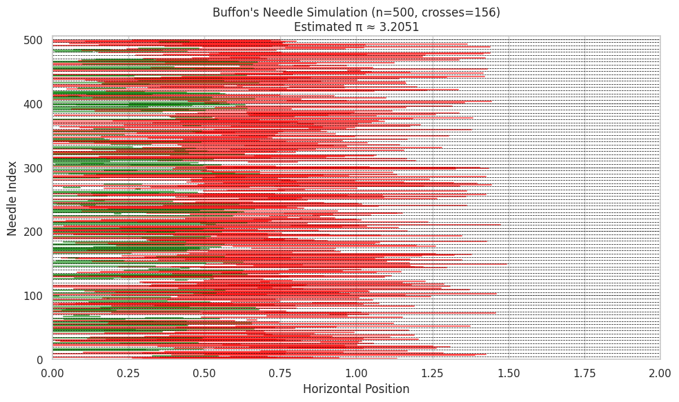
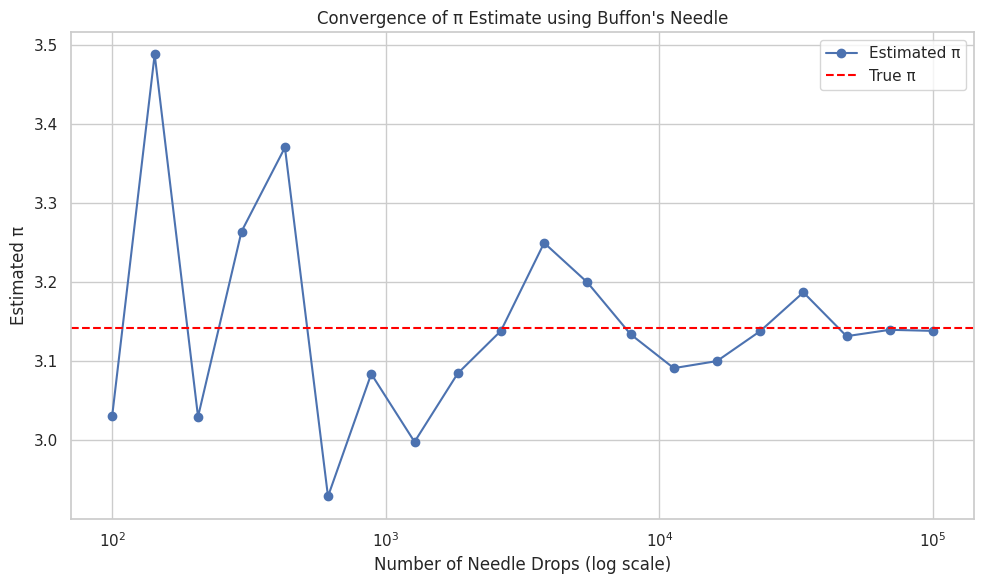

Problem 1
Sure, here’s a complete and structured explanation for Buffon’s Needle simulation, following the same format as the previous Monte Carlo π estimation task:
🎯 Estimating π Using Buffon’s Needle Method
🧠 Theoretical Foundation
Buffon’s Needle is one of the oldest known problems in geometric probability. It provides a probabilistic method to estimate π through a physical or simulated experiment.
📌 Setup:
- We have parallel lines on a plane, spaced a fixed distance apart (e.g., 2 units).
- A needle of a certain length (e.g., 1 unit) is dropped randomly onto the plane.
- We measure whether the needle crosses any of the lines.
📐 Derivation of Formula:
Let:
- \( L \): length of the needle
- \( d \): distance between the lines
- \( N \): number of needles dropped
- \( C \): number of needles that cross a line
If \( L \leq d \), then the probability that a needle crosses a line is:
Solving for π:
This formula becomes more accurate as N increases.
🧪 Simulation
We simulate the dropping of many needles by randomly generating: - The center position of the needle (between lines) - The angle at which it falls
The condition for crossing a line is:
If true, the needle crosses one of the parallel lines.
🛠 Key Steps:
- Generate random center \( x \) between 0 and \( d/2 \)
- Generate random angle \( \theta \in [0, \frac{\pi}{2}] \)
- Count how many needles satisfy the crossing condition
- Use the π estimation formula
📊 Visualization
To visualize the simulation: - Each needle is drawn as a line segment at its given angle and center. - Green needles cross a line. - Red needles do not cross. - Dashed horizontal lines represent the parallel lines.
This helps to intuitively observe which needles contribute to estimating π. 
📈 Analysis
To explore accuracy and convergence:
- We vary the number of needle drops (e.g., 100, 1000, 5000, 10,000).
- At each step, we compute the estimated π.
- Then we compare it to the actual value of π to analyze the absolute error:  [ \text{Error} = \left| \pi_{\text{true}} - \pi_{\text{estimated}} \right| ]
🔍 Key Observations:
- More drops → more accurate estimate, but with slower convergence.
- Compared to the circle method, Buffon’s Needle converges more slowly and shows more variance in small samples.
- The method is mathematically elegant, but less practical for fast/precise π estimation.
Let me know if you'd like the code for the convergence analysis of Buffon's Needle too (with graphs like in the previous task)!